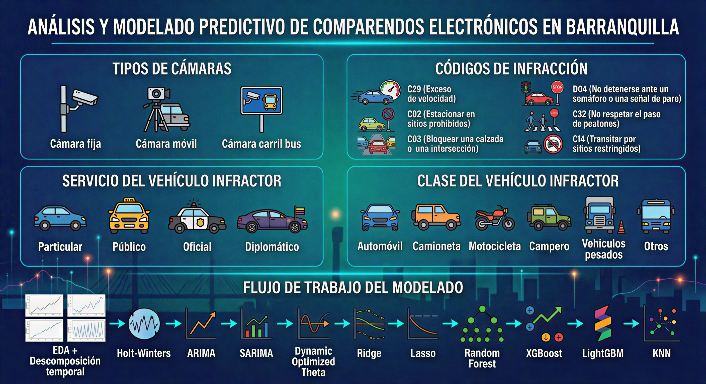

Introducción#
Contextualización del Problema: Movilidad Urbana y Foto-Comparendos#
El fenómeno de la movilidad urbana en las ciudades latinoamericanas enfrenta desafíos estructurales que demandan soluciones innovadoras y basadas en evidencia. Entre estos desafíos, la seguridad vial ocupa un lugar predominante, dado su impacto directo en la reducción de siniestros, la protección de la vida de peatones, ciclistas y conductores, y la calidad de vida general de los habitantes. En este contexto, los sistemas de fotodetección de infracciones de tránsito, conocidos comúnmente como foto-comparendos, han emergido como una herramienta tecnológica clave para regular el cumplimiento de las normas de tránsito. Estos dispositivos, ubicados estratégicamente en corredores viales y puntos críticos de las ciudades, capturan en tiempo real las infracciones cometidas por los conductores, generando sanciones automáticas que buscan disuadir comportamientos de riesgo. La evidencia internacional ha demostrado que la instalación de este tipo de sistemas tiene un efecto positivo y significativo en la reducción de siniestros viales, la disminución de la accidentalidad y la modificación de conductas infractoras, especialmente en lo relacionado con excesos de velocidad y pasos de semáforos en rojo.
Justificación del Caso de Estudio: Barranquilla como Escenario Privilegiado#
La ciudad de Barranquilla, capital del departamento del Atlántico y uno de los principales centros urbanos y portuarios de la región Caribe colombiana, presenta un caso de estudio particularmente relevante para el análisis de este fenómeno. La ciudad ha venido implementando y expandiendo de manera sostenida su infraestructura de fotodetección, contando en el período de estudio con aproximadamente 50 cámaras distribuidas en puntos estratégicos de su geografía, con una proyección de crecimiento continuo. Esta infraestructura tecnológica ha permitido la recolección sistemática de una base de datos estructurada de gran magnitud, que supera las 340.000 instancias de comparendos agregados a nivel diario, registrados entre los años 2018 y 2025. Cada una de estas instancias contiene información valiosa sobre la fecha y hora de la infracción, el código específico de la norma transgredida, la clase o servicio de vehículo infractor (automóvil, motocicleta, transporte público, vehículo de carga, entre otros), y la dirección o ubicación geográfica donde se cometió la infracción, entre otras variables de interés.
La disponibilidad de este volumen de información, organizada de manera sistemática a través del portal de Datos Abiertos del Gobierno de Colombia, constituye una oportunidad única para llevar a cabo un análisis profundo y multidimensional del comportamiento vial en la ciudad. Este tipo de análisis no solo resulta relevante desde una perspectiva académica, sino que tiene implicaciones prácticas directas para la gestión pública, ya que permite a las secretarías de tránsito y movilidad identificar patrones de infracción, detectar zonas de alto riesgo, comprender la dinámica temporal de los comportamientos infractores y, fundamentalmente, anticipar tendencias futuras mediante herramientas de modelado predictivo.
Objetivos del Estudio#
En este marco, la presente investigación se propone desarrollar un análisis integral y un modelado predictivo de los comparendos electrónicos en la ciudad de Barranquilla, abordando el fenómeno desde una perspectiva metodológica rigurosa que integra múltiples enfoques analíticos. El estudio se estructura en torno a seis objetivos específicos que guían el desarrollo del trabajo:
Caracterizar la frecuencia, proporción y distribución espacial de las infracciones de tránsito registradas en la ciudad.
Evaluar los patrones de tendencia y estacionalidad presentes en las series temporales de las diferentes infracciones.
Implementar una amplia gama de modelos estadísticos clásicos y de aprendizaje automático para el pronóstico de dichas infracciones.
Comparar sistemáticamente el desempeño de estos modelos utilizando métricas de evaluación consolidadas.
Seleccionar el modelo óptimo para cada tipo de infracción analizada.
Generar pronósticos para el año 2026 que permitan anticipar el comportamiento esperado de las infracciones en un horizonte temporal aún no registrado en las bases de datos públicas.
Metodología General y Fases del Análisis#
Para alcanzar estos objetivos, la investigación despliega un conjunto de fases metodológicas que se articulan de manera secuencial y acumulativa.
Análisis Exploratorio de Datos#
La primera fase corresponde al análisis exploratorio de los datos, que se subdivide a su vez en un análisis univariado; donde se examina de manera independiente la distribución, frecuencias y estadísticos descriptivos de cada variable y un análisis bivariado donde se exploran las relaciones y asociaciones entre pares de variables, identificando cómo se comporta una variable en función de otra y detectando patrones conjuntos que no son evidentes en el examen individual de las características del dataset.
Georreferenciación y Análisis Espacial#
La segunda fase incorpora la dimensión espacial al análisis mediante la georreferenciación de los puntos de control. Utilizando archivos Shapefile de Barranquilla por localidad, se ubican geográficamente las cámaras de fotodetección y se visualiza su distribución en el territorio urbano. Este análisis permite identificar la cobertura espacial del sistema de vigilancia, detectar zonas con mayor o menor concentración de cámaras, y establecer relaciones preliminares entre la ubicación de los puntos de control y el volumen de infracciones detectadas, sentando las bases conceptuales para futuros análisis de dependencia espacial o identificación de clusters de infracciones.
Descomposición Temporal de las Series#
La tercera fase se centra en la descomposición temporal de las series de comparendos electrónicos. Aplicando métodos como la descomposición STL (Seasonal and Trend decomposition using Loess) y su extensión MSTL (Multiple Seasonal-Trend decomposition using Loess), se separan y analizan los componentes estructurales de cada serie: la tendencia, que refleja la evolución de largo plazo de las infracciones; la estacionalidad, que captura patrones cíclicos que se repiten en intervalos regulares (como diferencias entre días de semana o variaciones estacionales anuales); y los residuos, que corresponden al componente aleatorio o irregular no explicado por los dos primeros. Este análisis se complementa con pruebas estadísticas robustas, como la prueba de Dickey-Fuller Aumentada (ADF) para evaluar la estacionariedad de las series, y la prueba de Ljung-Box para verificar la presencia de autocorrelación en los residuos, validando así la idoneidad de los datos para aplicaciones predictivas.
Modelado Predictivo#
La cuarta y más extensa fase corresponde al modelado predictivo propiamente dicho. Para cada una de las cinco infracciones más representativas en términos de frecuencia y relevancia para la seguridad vial: C29 (exceso de velocidad), C02 (estacionamiento en sitios prohibidos), C03 (bloquear calzada o intersección), D04 (no detenerse ante una luz roja o amarilla de semáforo) y C32 (no respetar el paso de peatones); se implementa una metodología iterativa acumulativa.
Modelos Implementados#
Modelos Estadísticos Clásicos#
El proceso inicia con el modelo Holt-Winters, cuyos parámetros de suavizamiento se ajustan con base en los hallazgos del análisis exploratorio y la descomposición temporal. Este modelo, que descompone la serie en sus componentes de nivel, tendencia y estacionalidad, ofrece una primera aproximación al comportamiento predictivo del fenómeno.
Posteriormente, se incorporan secuencialmente los modelos ARIMA (AutoRegressive Integrated Moving Average) y SARIMA (Seasonal ARIMA), que constituyen referentes clásicos en el análisis de series temporales por su capacidad para modelar dependencias lineales y componentes estacionales. Se incluye también el modelo Dynamic Optimized Theta (DOT) , una extensión del método Theta que incorpora optimización automática de parámetros y mayor flexibilidad frente a comportamientos no lineales.
Modelos de Regresión Regularizada#
Desde el enfoque de regresión lineal regularizada, se implementan los modelos Ridge (regularización L2) y Lasso (regularización L1), que resultan particularmente útiles cuando se incorporan múltiples variables rezagadas y componentes estacionales, ayudando a mitigar problemas de multicolinealidad y sobreajuste.
Modelos de Aprendizaje Automático basados en Árboles#
En el ámbito del aprendizaje automático, se implementan tres modelos de ensamble basados en árboles de decisión: Random Forest, que combina múltiples árboles construidos de manera paralela e independiente promediando sus predicciones; XGBoost, que mejora al anterior mediante un enfoque secuencial basado en descenso del gradiente e incorpora términos de regularización para controlar la complejidad; y LightGBM, que introduce estrategias de crecimiento por hojas y muestreo basado en gradientes para lograr mayor eficiencia computacional sin sacrificar capacidad predictiva.
Modelo basado en Similitud#
Finalmente, se implementa el modelo de vecinos más cercanos (KNN), un enfoque basado en similitud que identifica los patrones históricos más parecidos al período actual para estimar el valor futuro.
Transformación de Series para Modelos de Aprendizaje Automático#
Es importante señalar que, a diferencia de modelos como ARIMA o Holt-Winters que fueron diseñados específicamente para series temporales, los modelos de aprendizaje automático mencionados (Random Forest, XGBoost, LightGBM y KNN) requieren una transformación previa del problema: la serie temporal debe convertirse en un problema de aprendizaje supervisado mediante la creación de características autorregresivas utilizando ventanas deslizantes, complementadas con variables asociadas a la tendencia y estacionalidad de la serie. Esta transformación, aunque adicional, permite que estos modelos aprovechen una de sus principales ventajas: la capacidad de capturar relaciones no lineales, problemática que frecuentemente limita el desempeño de los modelos lineales tradicionales.
Métricas de Evaluación del Desempeño#
La evaluación del desempeño de todos los modelos se realiza mediante un conjunto de métricas consolidadas en la literatura especializada: el Error Cuadrático Medio (MSE), la Raíz del Error Cuadrático Medio (RMSE), el Error Absoluto Medio (MAE), el Error Porcentual Absoluto Medio (MAPE) y el Error Porcentual Absoluto Medio Simétrico (SMAPE). Estas métricas, cada una con sus fortalezas y limitaciones, permiten una comparación robusta y multidimensional de la precisión predictiva de los modelos, considerando tanto la magnitud absoluta de los errores como su expresión porcentual relativa al valor real.
Generación de pronósticos para 2026#
Una vez completada la fase de modelado y comparación, se selecciona el mejor modelo para cada tipo de infracción. Con este modelo óptimo se procede a generar pronósticos del volumen esperado de comparendos para el año 2026, un período cuyos datos aún no han sido publicados por la Alcaldía de Barranquilla en el portal de Datos Abiertos del Gobierno de Colombia. Estos pronósticos no solo constituyen un ejercicio de validación externa de la capacidad predictiva de los modelos, sino que ofrecen información estratégica de alto valor para la gestión pública en seguridad vial.
Relevancia y Aportes del Estudio#
La relevancia de esta investigación trasciende el ámbito estrictamente académico. En un contexto donde los recursos públicos son limitados y las decisiones deben basarse en evidencia, contar con modelos capaces de anticipar con precisión el comportamiento de las infracciones de tránsito permite a las autoridades diseñar intervenciones más efectivas y eficientes. Por ejemplo, los pronósticos pueden:
Identificar semanas o meses del año con mayor concentración esperada de excesos de velocidad, orientando la programación de controles preventivos.
Señalar zonas horarias con alta probabilidad de infracciones por paso de semáforo en rojo, facilitando la optimización de los tiempos de los dispositivos de control.
Anticipar tendencias crecientes en infracciones relacionadas con el respeto a los peatones, activando campañas de concientización dirigidas.
Brecha de Conocimiento y Contribución Original#
Adicionalmente, el presente estudio aborda una brecha significativa en la literatura especializada. Si bien existen antecedentes internacionales de aplicación de modelos predictivos a series temporales de infracciones de tránsito, como el trabajo de Rezaei Ghahroodi y colaboradores que emplea modelos SARIMA para predecir el número de infracciones en otros contextos geográficos, se evidencia una clara carencia de estudios que realicen una comparativa sistemática y exhaustiva entre múltiples enfoques de modelado aplicados específicamente al análisis de comparendos electrónicos en Colombia y, más particularmente, en la ciudad de Barranquilla. Esta investigación busca llenar dicho vacío, aportando evidencia empírica local que pueda orientar tanto futuros desarrollos metodológicos como decisiones de política pública.
Estructura Visual del Proyecto#
La siguiente imagen presenta de manera sintética la estructura del proyecto, organizada en dos grandes bloques: las variables analizadas con sus principales categorías, y el flujo de trabajo del modelado predictivo.

Síntesis y Cierre#
En síntesis, esta investigación se propone no solo caracterizar el estado actual de las infracciones de tránsito captadas por fotodetección en Barranquilla, sino también dotar a los actores involucrados: secretarías de tránsito, autoridades de movilidad, planificadores urbanos, academia y ciudadanía en general de herramientas analíticas y predictivas rigurosas que permitan anticipar comportamientos futuros. En un mundo donde los datos abundan pero la capacidad de convertirlos en inteligencia accionable es aún limitada, este trabajo aspira a contribuir con un eslabón más en la construcción de ciudades más seguras, ordenadas y humanas, donde la tecnología al servicio de la movilidad se traduzca efectivamente en la salvaguarda de la vida y el bienestar de todos los actores viales.